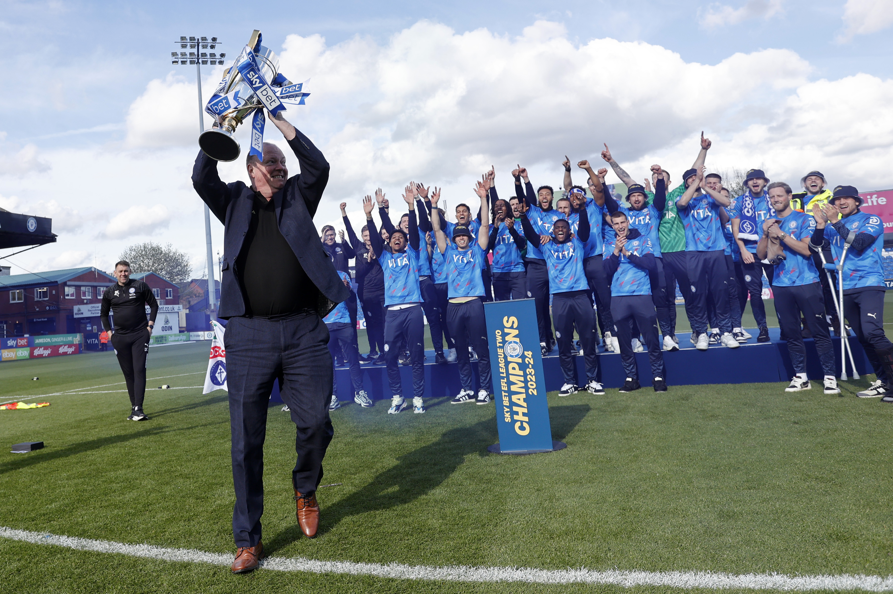
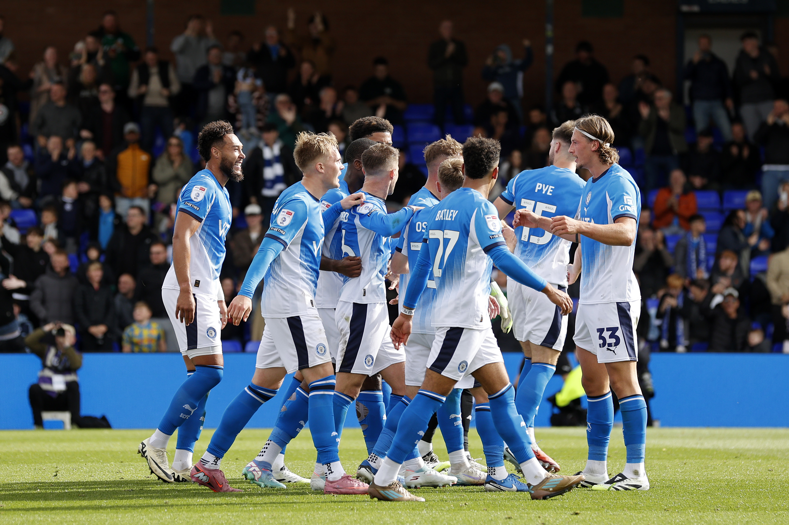
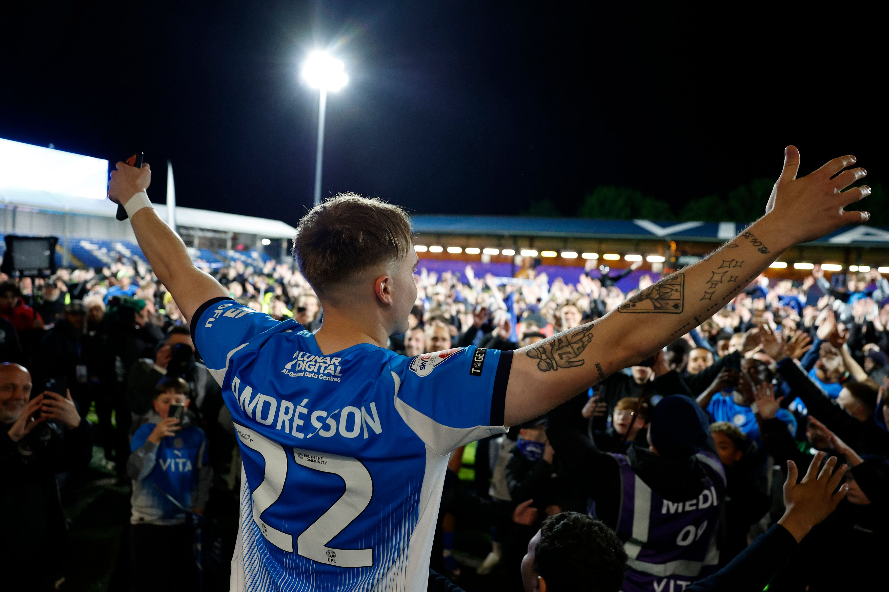

SINCE 1883
一座城，我们的帽匠。
从希顿诺里斯到埃奇利公园，从低谷到一次次重返联赛。

起点 · 1883
从希顿诺里斯出发
展开故事
俱乐部以希顿诺里斯流浪者的名字成立。足球逐渐成为当地社区生活的一部分。

起点 · 1890
斯托克波特郡之名
展开故事
俱乐部采用斯托克波特郡的名字。绰号“制帽匠”呼应城市的制帽工业传统。
主场 · 1902
埃奇利公园成为家
展开故事
球队迁入埃奇利公园。这座球场从此与看台、街区和一代代支持者联系在一起。




依据俱乐部历史及人物资料整理。生涯统计对应原赛季记录。俱乐部官网 ↗